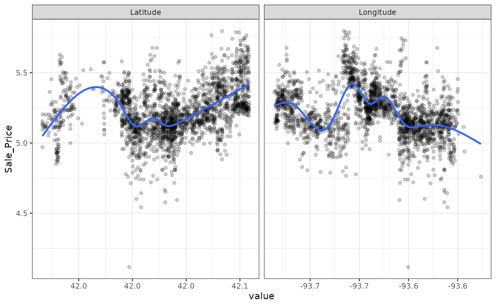
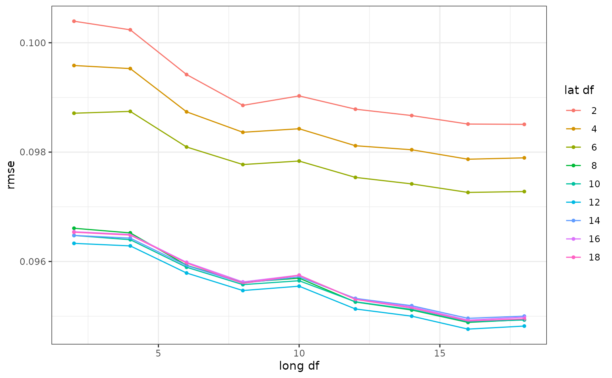
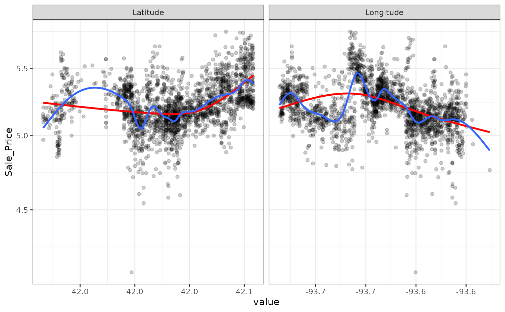
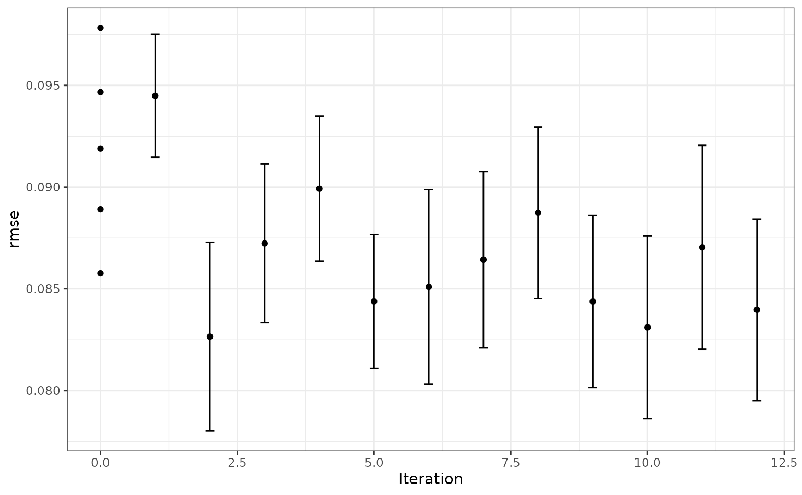

The tune package helps optimize the modeling process. Users can tag arguments in recipes and model objects for optimization. The search routines in tune can discover these arguments and evaluate candidate values until a combination with good performance is found.
As an example, let’s model the Ames housing data:
library(tidymodels)
data(ames)
set.seed(4595)
data_split <- ames %>%
mutate(Sale_Price = log10(Sale_Price)) %>%
initial_split(strata = Sale_Price)
ames_train <- training(data_split)
ames_test <- testing(data_split)For simplicity, the sale price of a house will be modeled as a function of its geo-location. These predictors appear to have nonlinear relationships with the outcome:
ames_train %>%
dplyr::select(Sale_Price, Longitude, Latitude) %>%
tidyr::pivot_longer(cols = c(Longitude, Latitude),
names_to = "predictor", values_to = "value") %>%
ggplot(aes(x = value, Sale_Price)) +
geom_point(alpha = .2) +
geom_smooth(se = FALSE) +
facet_wrap(~ predictor, scales = "free_x")
#> `geom_smooth()` using method = 'gam' and formula 'y ~ s(x, bs = "cs")'
These two predictors could be modeled using natural splines in conjunction with a linear model. The amount of “wiggliness” in these splines is determined by the degrees of freedom. An appropriate value of this parameter cannot be analytically determined from the data, so it is a tuning parameter (a.k.a. a hyper-parameter). A common approach is to use resampling to estimate model performance over different values of these parameters and use these results to set reasonable values.
We can tag these parameters for optimization using the tune() function:
ames_rec <-
recipe(Sale_Price ~ Gr_Liv_Area + Longitude + Latitude, data = ames_train) %>%
step_log(Gr_Liv_Area, base = 10) %>%
step_ns(Longitude, Latitude, deg_free = tune())The package can detect these values and optimize them.
However, based on the plot above, the potential amount of non-linearity between the sale price and the predictors might be different. For example, longitude might require more flexibility than latitude. The recipe above would constrain the nonlinearity of the predictors to be the same. We can probably do better than that.
To accomplish this, individual step_ns() terms can be added to the recipe for each predictor. However, we want these to be identifiable; using the same syntax as above, we can’t tell the difference between the two deg_free parameters.
tune() has an option to provide a text annotation so that each tuning parameter has a unique identifier:
ames_rec <-
recipe(Sale_Price ~ Gr_Liv_Area + Longitude + Latitude, data = ames_train) %>%
step_log(Gr_Liv_Area, base = 10) %>%
step_ns(Longitude, deg_free = tune("long df")) %>%
step_ns(Latitude, deg_free = tune("lat df"))The function dials::parameters() that can detect and collect the parameters that have been flagged for tuning:
parameters(ames_rec)
#> Collection of 2 parameters for tuning
#>
#> identifier type object
#> long df deg_free nparam[+]
#> lat df deg_free nparam[+]The dials package has default ranges for many parameters. The generic parameter function for deg_free has a fairly small range:
deg_free()
#> Degrees of Freedom (quantitative)
#> Range: [1, 5]but there is a dials function that is more appropriate for splines:
spline_degree()
#> Piecewise Polynomial Degree (quantitative)
#> Range: [1, 10]The parameter objects can be easily changed using the update() function:
ames_param <-
ames_rec %>%
parameters() %>%
update(
`long df` = spline_degree(),
`lat df` = spline_degree()
)
ames_param
#> Collection of 2 parameters for tuning
#>
#> identifier type object
#> long df deg_free nparam[+]
#> lat df deg_free nparam[+]Grid search uses a pre-defined set of candidate parameters and evaluates these using resampling. The basic ingredients are:
A grid of candidate values to evaluate.
One or more performance metrics for quantifying how well the model works.
A resampling scheme that can be used to appropriately measure performance (which could be a simple validation set).
To make the grid, a data frame is needed with column names matching the “id” column above. There are several dials functions to created grids (named grid_*). For example, a space-filling design can be created by:
spline_grid <- grid_max_entropy(ames_param, size = 10)
spline_grid
#> # A tibble: 10 x 2
#> `long df` `lat df`
#> <int> <int>
#> 1 2 9
#> 2 4 6
#> 3 5 10
#> 4 7 4
#> 5 8 1
#> 6 7 7
#> 7 10 6
#> 8 2 4
#> 9 3 1
#> 10 9 10Alternately, expand.grid() also works to create a regular grid:
df_vals <- seq(2, 18, by = 2)
# A regular grid:
spline_grid <- expand.grid(`long df` = df_vals, `lat df` = df_vals)Note that a 2-degree-of-freedom model is a simple quadratic fit.
There are two other ingredients that are required before tuning.
First is a model specification. Using parsnip, a basic linear model can be used:
lm_mod <- linear_reg() %>% set_engine("lm")No tuning parameters here.
As mentioned above, a resampling specification is also needed. The Ames data set are large enough to use simple 10-fold cross-validation:
The root mean squared error will be used to measure performance (and this is the default for regression problems).
Using these objects, tune_grid() can be used1:
ames_res <- tune_grid(lm_mod, ames_rec, resamples = cv_splits, grid = spline_grid)The object is similar to the rsample object but with one or more extra columns:
ames_res
#> # Tuning results
#> # 10-fold cross-validation using stratification
#> # A tibble: 10 x 4
#> splits id .metrics .notes
#> <list> <chr> <list> <list>
#> 1 <split [1978/221]> Fold01 <tibble[,6] [162 × 6]> <tibble[,1] [0 × 1]>
#> 2 <split [1979/220]> Fold02 <tibble[,6] [162 × 6]> <tibble[,1] [0 × 1]>
#> 3 <split [1979/220]> Fold03 <tibble[,6] [162 × 6]> <tibble[,1] [0 × 1]>
#> 4 <split [1979/220]> Fold04 <tibble[,6] [162 × 6]> <tibble[,1] [0 × 1]>
#> 5 <split [1979/220]> Fold05 <tibble[,6] [162 × 6]> <tibble[,1] [0 × 1]>
#> 6 <split [1979/220]> Fold06 <tibble[,6] [162 × 6]> <tibble[,1] [0 × 1]>
#> 7 <split [1979/220]> Fold07 <tibble[,6] [162 × 6]> <tibble[,1] [0 × 1]>
#> 8 <split [1979/220]> Fold08 <tibble[,6] [162 × 6]> <tibble[,1] [0 × 1]>
#> 9 <split [1979/220]> Fold09 <tibble[,6] [162 × 6]> <tibble[,1] [0 × 1]>
#> 10 <split [1981/218]> Fold10 <tibble[,6] [162 × 6]> <tibble[,1] [0 × 1]>The .metrics column has all of the holdout performance estimates2 for each parameter combination:
ames_res$.metrics[[1]]
#> # A tibble: 162 x 6
#> `long df` `lat df` .metric .estimator .estimate .config
#> <dbl> <dbl> <chr> <chr> <dbl> <chr>
#> 1 2 2 rmse standard 0.115 Preprocessor01_Model1
#> 2 2 2 rsq standard 0.625 Preprocessor01_Model1
#> 3 4 2 rmse standard 0.115 Preprocessor02_Model1
#> 4 4 2 rsq standard 0.624 Preprocessor02_Model1
#> 5 6 2 rmse standard 0.113 Preprocessor03_Model1
#> 6 6 2 rsq standard 0.633 Preprocessor03_Model1
#> 7 8 2 rmse standard 0.113 Preprocessor04_Model1
#> 8 8 2 rsq standard 0.638 Preprocessor04_Model1
#> 9 10 2 rmse standard 0.113 Preprocessor05_Model1
#> 10 10 2 rsq standard 0.637 Preprocessor05_Model1
#> # … with 152 more rowsTo get the average metric value for each parameter combination, collect_metrics() can be put to use:
estimates <- collect_metrics(ames_res)
estimates
#> # A tibble: 162 x 8
#> `long df` `lat df` .metric .estimator mean n std_err .config
#> <dbl> <dbl> <chr> <chr> <dbl> <int> <dbl> <chr>
#> 1 2 2 rmse standard 0.102 10 0.00243 Preprocessor01_Mod…
#> 2 2 2 rsq standard 0.674 10 0.0109 Preprocessor01_Mod…
#> 3 4 2 rmse standard 0.102 10 0.00242 Preprocessor02_Mod…
#> 4 4 2 rsq standard 0.675 10 0.0108 Preprocessor02_Mod…
#> 5 6 2 rmse standard 0.101 10 0.00241 Preprocessor03_Mod…
#> 6 6 2 rsq standard 0.681 10 0.0105 Preprocessor03_Mod…
#> 7 8 2 rmse standard 0.100 10 0.00246 Preprocessor04_Mod…
#> 8 8 2 rsq standard 0.685 10 0.0110 Preprocessor04_Mod…
#> 9 10 2 rmse standard 0.100 10 0.00243 Preprocessor05_Mod…
#> 10 10 2 rsq standard 0.685 10 0.0107 Preprocessor05_Mod…
#> # … with 152 more rowsThe values in the mean column are the averages of the 10 resamples. The best RMSE values corresponded to:
rmse_vals <-
estimates %>%
dplyr::filter(.metric == "rmse") %>%
arrange(mean)
rmse_vals
#> # A tibble: 81 x 8
#> `long df` `lat df` .metric .estimator mean n std_err .config
#> <dbl> <dbl> <chr> <chr> <dbl> <int> <dbl> <chr>
#> 1 16 12 rmse standard 0.0961 10 0.00226 Preprocessor53_Mo…
#> 2 16 18 rmse standard 0.0961 10 0.00228 Preprocessor80_Mo…
#> 3 16 8 rmse standard 0.0962 10 0.00223 Preprocessor35_Mo…
#> 4 16 10 rmse standard 0.0962 10 0.00225 Preprocessor44_Mo…
#> 5 18 12 rmse standard 0.0963 10 0.00234 Preprocessor54_Mo…
#> 6 12 12 rmse standard 0.0963 10 0.00235 Preprocessor51_Mo…
#> 7 16 16 rmse standard 0.0963 10 0.00224 Preprocessor71_Mo…
#> 8 18 18 rmse standard 0.0963 10 0.00235 Preprocessor81_Mo…
#> 9 14 12 rmse standard 0.0963 10 0.00234 Preprocessor52_Mo…
#> 10 16 14 rmse standard 0.0963 10 0.00221 Preprocessor62_Mo…
#> # … with 71 more rowsSmaller degrees of freedom values correspond to more linear functions, but the grid search indicates that more nonlinearity is better. What was the relationship between these two parameters and RMSE?
autoplot(ames_res, metric = "rmse")
Interestingly, latitude does not do well with degrees of freedom less than 8. How nonlinear are the optimal degrees of freedom?
Let’s plot these spline functions over the data for booth good and bad values of deg_free:
ames_train %>%
dplyr::select(Sale_Price, Longitude, Latitude) %>%
tidyr::pivot_longer(cols = c(Longitude, Latitude),
names_to = "predictor", values_to = "value") %>%
ggplot(aes(x = value, Sale_Price)) +
geom_point(alpha = .2) +
geom_smooth(se = FALSE, method = lm, formula = y ~ splines::ns(x, df = 3), col = "red") +
geom_smooth(se = FALSE, method = lm, formula = y ~ splines::ns(x, df = 16)) +
scale_y_log10() +
facet_wrap(~ predictor, scales = "free_x")
Looking at these plots, the smaller degrees of freedom (red) are clearly under-fitting. Visually, the more complex splines (blue) might indicate that there is overfitting but this would result in poor RMSE values when computed on the hold-out data.
Based on these results, a new recipe would be created with the optimized values (using the entire training set) and this would be combined with a linear model created form the entire training set.
Instead of a linear regression, a nonlinear model might provide good performance. A K-nearest-neighbor fit will also be optimized. For this example, the number of neighbors and the distance weighting function will be optimized:
# requires the kknn package
knn_mod <-
nearest_neighbor(neighbors = tune(), weight_func = tune()) %>%
set_engine("kknn") %>%
set_mode("regression")The easiest approach to optimize the pre-processing and model parameters is to bundle these objects into a workflow:
library(workflows)
knn_wflow <-
workflow() %>%
add_model(knn_mod) %>%
add_recipe(ames_rec)From this, the parameter set can be used to modify the range and values of parameters being optimized3:
knn_param <-
knn_wflow %>%
parameters() %>%
update(
`long df` = spline_degree(c(2, 18)),
`lat df` = spline_degree(c(2, 18)),
neighbors = neighbors(c(3, 50)),
weight_func = weight_func(values = c("rectangular", "inv", "gaussian", "triangular"))
)This parameter collection can be passed to the grid functions via the param_info arguments.
Instead of using grid search, an iterative method called Bayesian optimization can be used. This takes an initial set of results and tries to predict the next tuning parameters to evaluate.
Although no grid is required, the process requires a few additional pieces of information:
A description of the search space. At a minimum, the would consist of ranges for numeric values and a list of values for categorical tuning parameters.
An acquisition function that helps score potential tuning parameter values.
A model for analyzing and making predictions of the best tuning parameter values. A Gaussian Process model is typical and used here.
The code to conduct the search is:
ctrl <- control_bayes(verbose = TRUE)
set.seed(8154)
knn_search <- tune_bayes(knn_wflow, resamples = cv_splits, initial = 5, iter = 20,
param_info = knn_param, control = ctrl)
#>
#> ❯ Generating a set of 5 initial parameter results
#> ✓ Initialization complete
#>
#> Optimizing rmse using the expected improvement
#>
#> ── Iteration 1 ─────────────────────────────────────────────────────────────────
#>
#> i Current best: rmse=0.08684 (@iter 0)
#> i Gaussian process model
#> ! The Gaussian process model is being fit using 7 features but only has 5
#> data points to do so. This may cause errors or a poor model fit.
#> ✓ Gaussian process model
#> i Generating 4791 candidates
#> i Predicted candidates
#> i neighbors=5, weight_func=triangular, long df=2, lat df=4
#> i Estimating performance
#> ✓ Estimating performance
#> ♥ Newest results: rmse=0.08485 (+/-0.00208)
#>
#> ── Iteration 2 ─────────────────────────────────────────────────────────────────
#>
#> i Current best: rmse=0.08485 (@iter 1)
#> i Gaussian process model
#> ! The Gaussian process model is being fit using 7 features but only has 6
#> data points to do so. This may cause errors or a poor model fit.
#> ✓ Gaussian process model
#> i Generating 4762 candidates
#> i Predicted candidates
#> i neighbors=50, weight_func=gaussian, long df=18, lat df=8
#> i Estimating performance
#> ✓ Estimating performance
#> ⓧ Newest results: rmse=0.09814 (+/-0.00265)
#>
#> ── Iteration 3 ─────────────────────────────────────────────────────────────────
#>
#> i Current best: rmse=0.08485 (@iter 1)
#> i Gaussian process model
#> ! The Gaussian process model is being fit using 7 features but only has 7
#> data points to do so. This may cause errors or a poor model fit.
#> ✓ Gaussian process model
#> i Generating 4773 candidates
#> i Predicted candidates
#> i neighbors=48, weight_func=rectangular, long df=2, lat df=18
#> i Estimating performance
#> ✓ Estimating performance
#> ⓧ Newest results: rmse=0.1172 (+/-0.00223)
#>
#> ── Iteration 4 ─────────────────────────────────────────────────────────────────
#>
#> i Current best: rmse=0.08485 (@iter 1)
#> i Gaussian process model
#> ! The Gaussian process model is being fit using 7 features but only has 8
#> data points to do so. This may cause errors or a poor model fit.
#> ✓ Gaussian process model
#> i Generating 4752 candidates
#> i Predicted candidates
#> i neighbors=11, weight_func=triangular, long df=6, lat df=2
#> i Estimating performance
#> ✓ Estimating performance
#> ♥ Newest results: rmse=0.08373 (+/-0.00272)
#>
#> ── Iteration 5 ─────────────────────────────────────────────────────────────────
#>
#> i Current best: rmse=0.08373 (@iter 4)
#> i Gaussian process model
#> ✓ Gaussian process model
#> i Generating 4782 candidates
#> i Predicted candidates
#> i neighbors=15, weight_func=triangular, long df=3, lat df=2
#> i Estimating performance
#> ✓ Estimating performance
#> ⓧ Newest results: rmse=0.08385 (+/-0.00261)
#>
#> ── Iteration 6 ─────────────────────────────────────────────────────────────────
#>
#> i Current best: rmse=0.08373 (@iter 4)
#> i Gaussian process model
#> ✓ Gaussian process model
#> i Generating 4735 candidates
#> i Predicted candidates
#> i neighbors=10, weight_func=gaussian, long df=4, lat df=2
#> i Estimating performance
#> ✓ Estimating performance
#> ⓧ Newest results: rmse=0.08459 (+/-0.0029)
#>
#> ── Iteration 7 ─────────────────────────────────────────────────────────────────
#>
#> i Current best: rmse=0.08373 (@iter 4)
#> i Gaussian process model
#> ✓ Gaussian process model
#> i Generating 4775 candidates
#> i Predicted candidates
#> i neighbors=13, weight_func=triangular, long df=11, lat df=2
#> i Estimating performance
#> ✓ Estimating performance
#> ⓧ Newest results: rmse=0.08611 (+/-0.00271)
#>
#> ── Iteration 8 ─────────────────────────────────────────────────────────────────
#>
#> i Current best: rmse=0.08373 (@iter 4)
#> i Gaussian process model
#> ✓ Gaussian process model
#> i Generating 4766 candidates
#> i Predicted candidates
#> i neighbors=16, weight_func=triangular, long df=6, lat df=3
#> i Estimating performance
#> ✓ Estimating performance
#> ♥ Newest results: rmse=0.08357 (+/-0.00247)
#>
#> ── Iteration 9 ─────────────────────────────────────────────────────────────────
#>
#> i Current best: rmse=0.08357 (@iter 8)
#> i Gaussian process model
#> ✓ Gaussian process model
#> i Generating 4765 candidates
#> i Predicted candidates
#> i neighbors=4, weight_func=rectangular, long df=4, lat df=3
#> i Estimating performance
#> ✓ Estimating performance
#> ⓧ Newest results: rmse=0.08626 (+/-0.00262)
#>
#> ── Iteration 10 ────────────────────────────────────────────────────────────────
#>
#> i Current best: rmse=0.08357 (@iter 8)
#> i Gaussian process model
#> ✓ Gaussian process model
#> i Generating 4755 candidates
#> i Predicted candidates
#> i neighbors=17, weight_func=triangular, long df=5, lat df=2
#> i Estimating performance
#> ✓ Estimating performance
#> ⓧ Newest results: rmse=0.08463 (+/-0.00276)
#>
#> ── Iteration 11 ────────────────────────────────────────────────────────────────
#>
#> i Current best: rmse=0.08357 (@iter 8)
#> i Gaussian process model
#> ✓ Gaussian process model
#> i Generating 4776 candidates
#> i Predicted candidates
#> i neighbors=14, weight_func=triangular, long df=6, lat df=4
#> i Estimating performance
#> ✓ Estimating performance
#> ⓧ Newest results: rmse=0.08361 (+/-0.00226)
#>
#> ── Iteration 12 ────────────────────────────────────────────────────────────────
#>
#> i Current best: rmse=0.08357 (@iter 8)
#> i Gaussian process model
#> ✓ Gaussian process model
#> i Generating 4777 candidates
#> i Predicted candidates
#> i neighbors=16, weight_func=gaussian, long df=7, lat df=3
#> i Estimating performance
#> ✓ Estimating performance
#> ⓧ Newest results: rmse=0.08534 (+/-0.00247)
#>
#> ── Iteration 13 ────────────────────────────────────────────────────────────────
#>
#> i Current best: rmse=0.08357 (@iter 8)
#> i Gaussian process model
#> ✓ Gaussian process model
#> i Generating 4774 candidates
#> i Predicted candidates
#> i neighbors=11, weight_func=triangular, long df=5, lat df=3
#> i Estimating performance
#> ✓ Estimating performance
#> ♥ Newest results: rmse=0.08272 (+/-0.00251)
#>
#> ── Iteration 14 ────────────────────────────────────────────────────────────────
#>
#> i Current best: rmse=0.08272 (@iter 13)
#> i Gaussian process model
#> ✓ Gaussian process model
#> i Generating 4774 candidates
#> i Predicted candidates
#> i neighbors=4, weight_func=triangular, long df=16, lat df=18
#> i Estimating performance
#> ✓ Estimating performance
#> ⓧ Newest results: rmse=0.091 (+/-0.00222)
#>
#> ── Iteration 15 ────────────────────────────────────────────────────────────────
#>
#> i Current best: rmse=0.08272 (@iter 13)
#> i Gaussian process model
#> ✓ Gaussian process model
#> i Generating 4783 candidates
#> i Predicted candidates
#> i neighbors=3, weight_func=rectangular, long df=6, lat df=10
#> i Estimating performance
#> ✓ Estimating performance
#> ⓧ Newest results: rmse=0.08922 (+/-0.00237)
#>
#> ── Iteration 16 ────────────────────────────────────────────────────────────────
#>
#> i Current best: rmse=0.08272 (@iter 13)
#> i Gaussian process model
#> ✓ Gaussian process model
#> i Generating 4746 candidates
#> i Predicted candidates
#> i neighbors=11, weight_func=triangular, long df=3, lat df=6
#> i Estimating performance
#> ✓ Estimating performance
#> ♥ Newest results: rmse=0.08272 (+/-0.00226)
#>
#> ── Iteration 17 ────────────────────────────────────────────────────────────────
#>
#> i Current best: rmse=0.08272 (@iter 16)
#> i Gaussian process model
#> ✓ Gaussian process model
#> i Generating 4790 candidates
#> i Predicted candidates
#> i neighbors=10, weight_func=triangular, long df=2, lat df=3
#> i Estimating performance
#> ✓ Estimating performance
#> ⓧ Newest results: rmse=0.08341 (+/-0.00236)
#>
#> ── Iteration 18 ────────────────────────────────────────────────────────────────
#>
#> i Current best: rmse=0.08272 (@iter 16)
#> i Gaussian process model
#> ✓ Gaussian process model
#> i Generating 4782 candidates
#> i Predicted candidates
#> i neighbors=10, weight_func=triangular, long df=6, lat df=8
#> i Estimating performance
#> ✓ Estimating performance
#> ⓧ Newest results: rmse=0.08281 (+/-0.00232)
#>
#> ── Iteration 19 ────────────────────────────────────────────────────────────────
#>
#> i Current best: rmse=0.08272 (@iter 16)
#> i Gaussian process model
#> ✓ Gaussian process model
#> i Generating 4771 candidates
#> i Predicted candidates
#> i neighbors=13, weight_func=triangular, long df=4, lat df=7
#> i Estimating performance
#> ✓ Estimating performance
#> ♥ Newest results: rmse=0.08251 (+/-0.00235)
#>
#> ── Iteration 20 ────────────────────────────────────────────────────────────────
#>
#> i Current best: rmse=0.08251 (@iter 19)
#> i Gaussian process model
#> ✓ Gaussian process model
#> i Generating 4781 candidates
#> i Predicted candidates
#> i neighbors=13, weight_func=triangular, long df=4, lat df=9
#> i Estimating performance
#> ✓ Estimating performance
#> ⓧ Newest results: rmse=0.08428 (+/-0.00241)Visually, the performance gain was:
autoplot(knn_search, type = "performance", metric = "rmse")
The best results here were:
collect_metrics(knn_search) %>%
dplyr::filter(.metric == "rmse") %>%
arrange(mean)
#> # A tibble: 25 x 11
#> neighbors weight_func `long df` `lat df` .metric .estimator mean n
#> <int> <chr> <int> <int> <chr> <chr> <dbl> <int>
#> 1 13 triangular 4 7 rmse standard 0.0825 10
#> 2 11 triangular 3 6 rmse standard 0.0827 10
#> 3 11 triangular 5 3 rmse standard 0.0827 10
#> 4 10 triangular 6 8 rmse standard 0.0828 10
#> 5 10 triangular 2 3 rmse standard 0.0834 10
#> 6 16 triangular 6 3 rmse standard 0.0836 10
#> 7 14 triangular 6 4 rmse standard 0.0836 10
#> 8 11 triangular 6 2 rmse standard 0.0837 10
#> 9 15 triangular 3 2 rmse standard 0.0838 10
#> 10 13 triangular 4 9 rmse standard 0.0843 10
#> # … with 15 more rows, and 3 more variables: std_err <dbl>, .config <chr>,
#> # .iter <int>With this intrinsically nonlinear model there is less reliance on the nonlinear terms created by the recipe.
A simple R model formula could have been used here, such as Sale_Price ~ log10(Gr_Liv_Area) + Longitude + Latitude. A recipe is not required.↩︎
tune has default measures of performance that it uses if none are specified. Here the RMSE and R2 are estimated. This can be changed using the metrics option.↩︎
One of the tuning parameters (weight_func) is categorical and, by default, has 10 unique values. The model used to predict new test parameters is a Gaussian process model, and this can become slow to fit when the number of tuning parameters is large or when a categorical parameter generates many dummy variables. We’ve reduced the number of categories for this parameter to speed things up a bit.↩︎